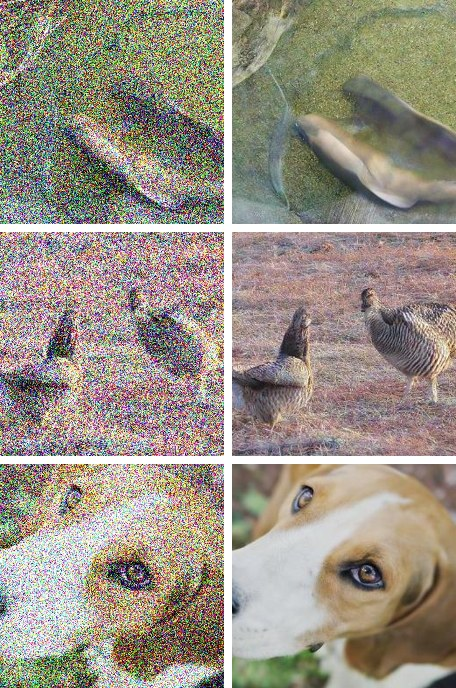

INFERENCE RECORD / NOT A REPRODUCTION
最难的那类损坏上，
重画一遍确实救回来。
100 张 ImageNet-C gaussian_noise（severity 5，10 类 × 10 张），ResNet-50 + ADM 无条件扩散模型，按官方 image_adapt.sh 的协议做输入适配。仅原图 top-1 3.0%，仅适配图 61.0%，DDA 自集成 57.0%。source 已经接近随机，集成反而被原图拖低——这是本次走查最值得记的现象。
跑了什么
两步：先用 image_adapt/scripts/image_sample.py 对每张测试图做「前向加噪 → 带结构引导的反向去噪」，得到适配图；再用 model_adapt/test_ensemble.py 跑三种集成：first（只看原图，等价 source-only）、second（只看适配图）、sum（两者 logits 相加，论文默认）。
适配超参照仓库脚本：D=4（低通滤波下采样倍数）、N=50（扩散步数）、scale=6（结构引导步长）、100 步 DDIM 重采样、单进程 -n 1。只跑 gaussian_noise 一个损坏的 severity 5。
环境与改动
python 3.8、torch 2.0.1+cu118、torchvision 0.15.2+cu118、mmcv-full 1.7.2（openmmlab 的 cu118/torch2.0 预编译轮子；1.7.1 无对应轮子会走源码编译并失败）、mmcls 0.25.0、mpi4py（conda-forge）、blobfile、pyarrow、setuptools<70。
改动两处，均不影响 ResNet-50 路径：(1) model_adapt/configs/_base_/custom_imports.py 注释掉 model_adapt.rednet，因为 rednet → involution_cupy → import cupy，而 cupy 在本机 py3.8 装不上（fastrlock 需要 Cython≥3.9）；(2) 配置里 imagenetc_ReCr2.py 写死 corruption=corruption[1]（shot_noise），用 --cfg-options data.test.corruption=gaussian_noise 覆盖，未改文件。
结果
| ensemble | top-1 | 含义 |
|---|---|---|
| first | 3.0% | 仅原图（= source-only 基线） |
| second | 61.0% | 仅扩散适配后的图 |
| sum | 57.0% | DDA 自集成（论文默认） |
论文 Table 1 的 18.7→29.7 是 15 种损坏的平均；这里只跑最难的 gaussian_noise（σ=0.38），ResNet-50 原图只剩 3.0%，与 Diffusion-TTA 论文 Table 2 同一损坏的 6.3% 同量级。适配后 61% 与 SDA 论文 Table 4 里同一损坏的 DDA=59.9（ConvNeXt-B）同量级——但两者骨干与协议不同，只能当方向性一致。
耗时：100 张适配（25 个 batch × 100 步）约 11.5 分钟；三个 ensemble 各 <40 秒。
样例

dda/out/atlas/mk.py 直接拼接原图与输出，未做增强。没跑的部分与局限
- 小样本，不等同论文指标：只覆盖 1 种损坏（15 种中的 gaussian_noise）、100 张（全量 50000）、10 个类别。
- 自集成方向反转：source 只有 3.0% 时，sum（57.0）低于 second（61.0）。论文的自集成假设原图仍有可用信息，这个假设在最强噪声下不成立；报告「DDA 优于 source」时不能把这一项算成增益。
- 没跑完整 ImageNet-C / ImageNet-C̄：不下载 20 GB+ 的全量数据，因此没有 15 种平均与 C̄ 的结论。
- 没跑其他骨干：Swin、ConvNeXt 均未测，无法验证「跨架构不调参」。
- 没跑联合目标与数据流敏感性：论文 Table 3 的 TENT 崩溃对比是本篇最有信息量的实验，本次没有复现。
- 数据是镜像的 shard0：100 张来自 HF 镜像的 12500 张分片，图像统计（std 0.269 / lapvar 0.75）与官方同一损坏的公开值（0.277 / 0.734）接近，但未与官方 tar 逐张比对。
文件位置
| 路径 | 内容 |
|---|---|
/data1/kxchen/infer-repro/dda | 官方代码 @ accf067（code/）、环境（env/）、权重（ckpt/） |
.../dda/data/imagenetc/gaussian_noise/5 | 100 张测试原图（224×224，10 类 × 10 张） |
.../dda/data/generated/gaussian_noise/5 | 100 张扩散适配输出（256×256） |
.../dda/out/atlas/repro.jpg | 本页样例拼图（服务器生成后 scp） |
.../dda/RECORD.md | 本页数字的出处 |
来源
- DDA 论文（arXiv:2207.03442）与官方仓库。
- 扩散权重：guided-diffusion 的
256x256_diffusion_uncond.pt；分类权重：mmcls 的 ResNet-50 1k。SDA 仓库的 Table 4 被用作同一损坏上的参照值。 - 本页数字全部取自服务器
RECORD.md与评测日志，样例图由data/generated与data/imagenetc的同名文件拼接。